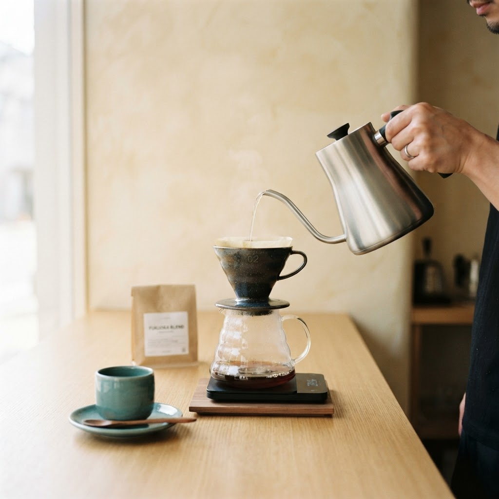
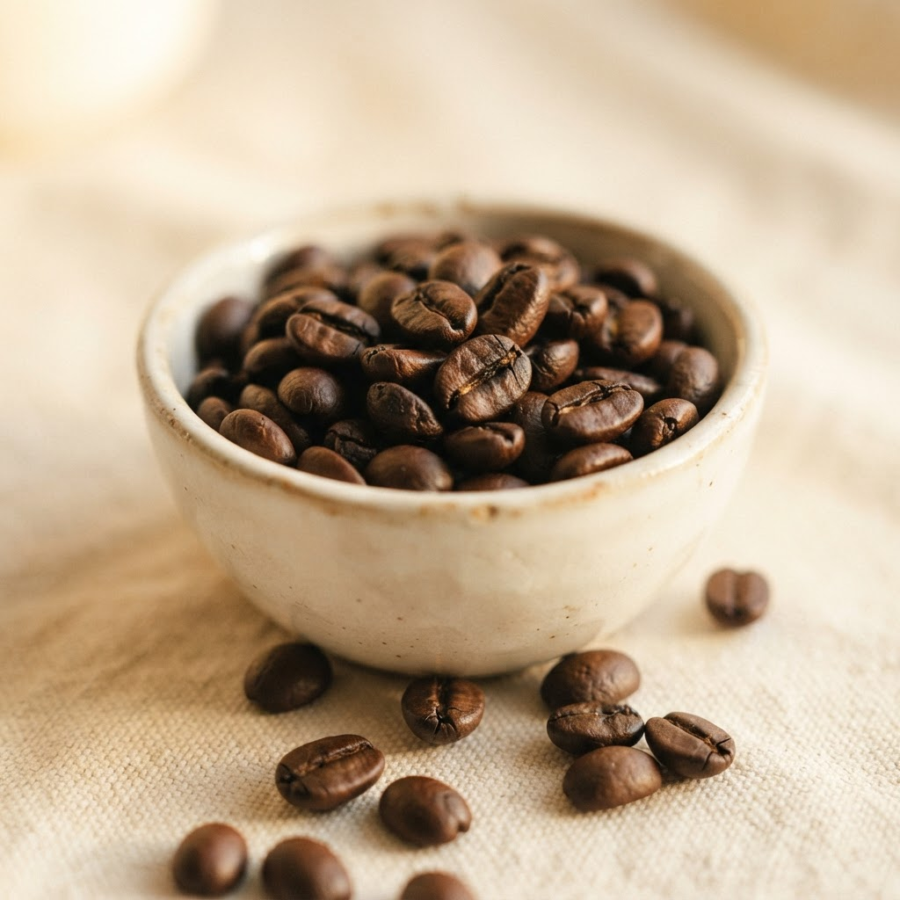
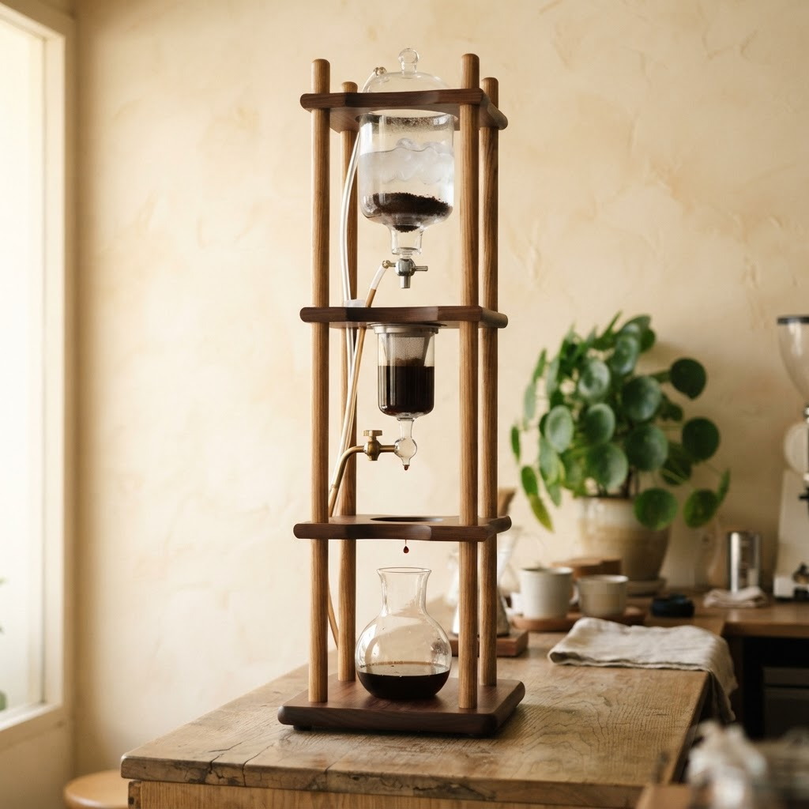
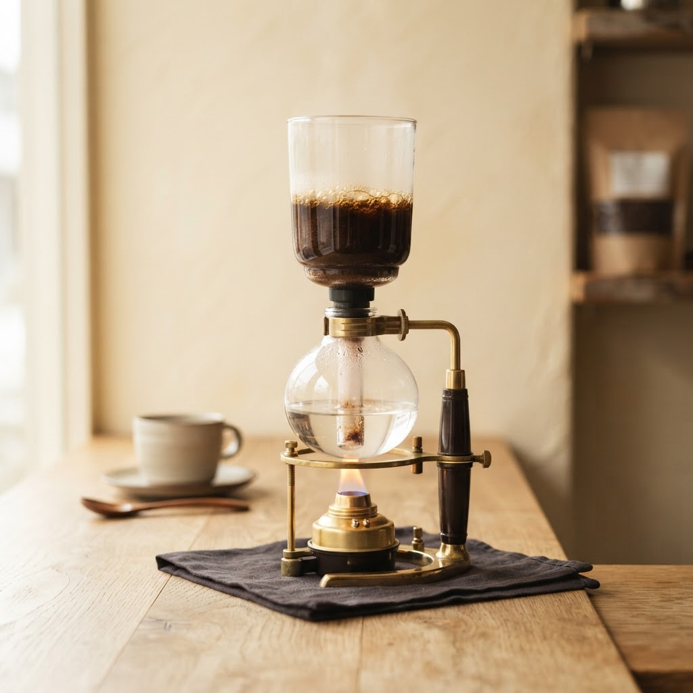
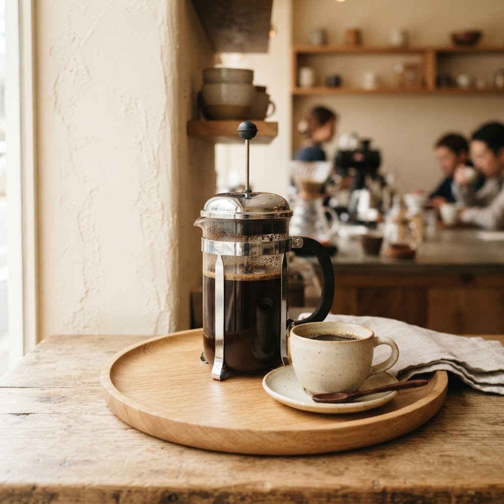
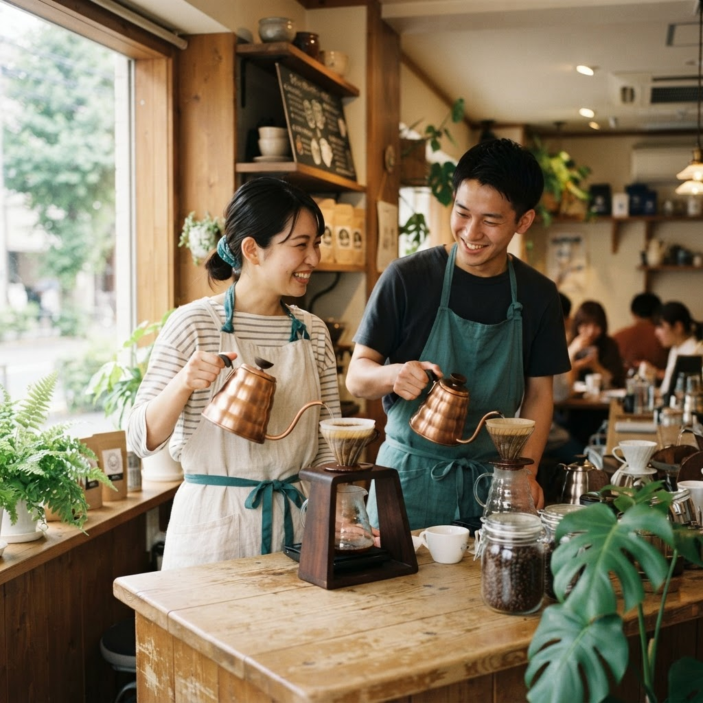

4€V60
Filtrado por goteo con molienda media. El agua cae despacio durante tres minutos y arrastra notas limpias y brillantes. El método más versátil para descubrir la personalidad de un grano nuevo.
Café de especialidad · Barcelona
Ookini significa gracias en Kansai, la región donde nació el Kyoto drip. Servimos café preparado con métodos lentos y con la atención que el grano merece.


Bienvenido a Ookini
Queremos que nuestros huéspedes tengan una experiencia única e inolvidable, descubriendo juntos una de las formas japonesas de beber café. Atendemos con pasión, alegría y profesionalidad.
Cada taza es un ritual: la molienda, el agua, la paciencia. Elaboramos un máximo de 50 tazas al día para garantizar la máxima calidad.
La carta
Cuatro caminos distintos para un mismo grano. Elige el tuyo.

4€Filtrado por goteo con molienda media. El agua cae despacio durante tres minutos y arrastra notas limpias y brillantes. El método más versátil para descubrir la personalidad de un grano nuevo.

7€Extracción en frío gota a gota durante ocho horas. Molienda media gruesa, agua a temperatura ambiente, paciencia japonesa. Un café denso, dulce y con muy poca acidez.

5€Método de vacío con molienda media fina. El agua sube por presión, se mezcla un minuto con el café y baja filtrada al apagar la llama. Una taza limpia y aromática.

4€Inmersión total con molienda gruesa durante cuatro minutos. Sin filtro de papel, los aceites del café construyen un cuerpo redondo y robusto. Nuestro único método sin reserva.

Quiénes somos
Somos un equipo joven y motivado. Durante varios viajes a Japón nos enamoramos de la cultura de Hokkaido y de cómo la gente vive el café. No se trata solo del café, sino de las emociones y de los momentos que nos quedan.
Queremos traer aquí, a nuestros huéspedes, todas esas emociones y recuerdos.
«Máte-do Kyoto: el tiempo no es un inconveniente.»
Disponibilidad de hoy
Elaboramos un máximo de 50 tazas al día para cuidar cada extracción.
Sin compromiso · Confirmamos por WhatsApp